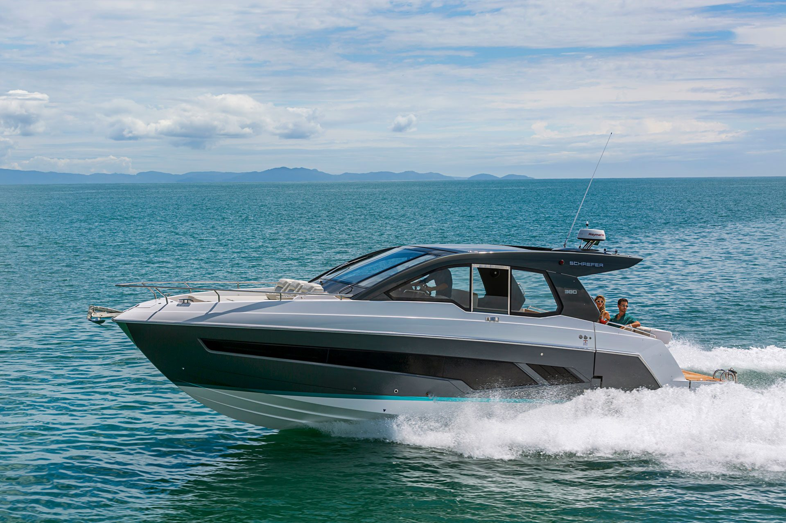

NP Yachts
Quem entende de mar
antes de entender de venda.
Uma marca
do Grupo Náutica Paraná.
A NP Yachts nasceu para cuidar de um segmento específico dentro do grupo: os iates Schaefer.
É representante oficial do estaleiro em Londrina e atende clientes em todo o Paraná. Do primeiro contato à entrega, o trabalho passa por definir o modelo, a motorização e o layout que correspondem ao uso real de cada proprietário — e continua depois que o barco entra na água.
Como trabalhamos
Quatro coisas que fazemos
antes de falar de preço.
Entender a navegação
Onde o barco vai ficar, quem embarca, quanto tempo a bordo. É o que separa um walk-around de um flybridge, e centro-rabeta de motor de popa.
Configurar o barco
Layout interno, motorização, acabamentos e opcionais. A produção verticalizada da Schaefer abre margem de personalização que vale a pena usar bem.
Acompanhar a produção
Contato direto com o estaleiro em Florianópolis durante a construção, até a entrega.
Ficar depois da entrega
Assistência, manutenção e suporte na operação do barco.
Venha conversar em Londrina.
Av. Nassim Jabur, 299 — Paulista.